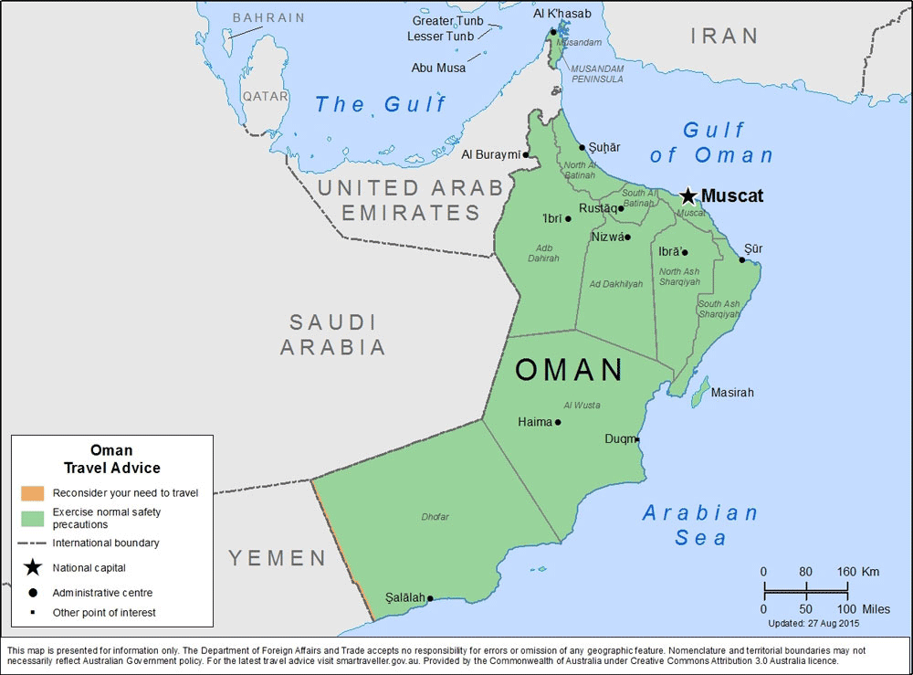

Owned by: Phillip Stapleton
Oman's History
From the late 17th century, the Omani Sultanate was a powerful empire, vying with Portugal and the UK for influence in the Persian Gulf and Indian Ocean. At its peak in the 19th century, Omani influence or control extended across the Strait of Hormuz to modern-day Iran and Pakistan, and as far south as Zanzibar. When its power declined in the 20th century, the sultanate came under the influence of the United Kingdom. For over 300 years, the relations built between the two empires were based on mutual benefits. The UK recognized Oman's geographical importance as a trading hub that secured their trade lanes in the Arabian Gulf and Indian Ocean and protected their empire in the Indian sub-continent. By contrast, the British strengthened Oman's internal unity and allied the sultanate against external threats. Historically, Muscat was the principal trading port of the Persian Gulf region. Muscat was also among the most important trading ports of the Indian Ocean.
Oman Fun Facts
- Oman is an Arab country on the southeastern coast of the Arabian Peninsula.
- The official name of the country is the Sultanate of Oman.
- It is bordered by the United Arab Emirates to the northwest, Saudi Arabia to the west, and Yemen to the southwest.
- The official language is Arabic.
- As of 1 January 2017, the population of Oman was estimated to be 5,119,745 people.
- It is the 70th largest country in the world by area with 309,500 square kilometers (119,500 square miles).
- Muscat is the capital and largest metropolitan city of Oman. Low-lying white buildings typify most of Muscat’s urban landscape, while the port-district of Muttrah, with its corniche and harbour, form the north-eastern periphery of the city.
- Oman is the only country in the world starting with the leter O.

Oman's Climate
Like the rest of the Persian Gulf, Oman generally has one of the hottest climates in the world—with summer temperatures in Muscat and northern Oman averaging 30 to 40 °C (86.0 to 104.0 °F). Oman receives little rainfall, with annual rainfall in Muscat averaging 100 mm (3.9 in), falling mostly in January. In the south, the Dhofar Mountains area near Salalah has a tropical-like climate and receives seasonal rainfall from late June to late September as a result of monsoon winds from the Indian Ocean, leaving the summer air saturated with cool moisture and heavy fog. Summer temperatures in Salalah range from 20 to 30 °C (68.0 to 86.0 °F)—relatively cool compared to northern Oman. The mountain areas receive more rainfall, and annual rainfall on the higher parts of the Jabal Akhdar probably exceeds 400 mm (15.7 in). Low temperatures in the mountainous areas result in snow cover once every few years. Some parts of the coast, particularly near the island of Masirah, sometimes receive no rain at all within the course of a year. The climate is generally very hot, with temperatures reaching around 50 °C (122.0 °F) (peak) in the hot season, from May to September. On June 26, 2018 the city of Qurayyat, Oman set the record for highest minimum temperature in a 24-hour period, 42.6 °C (108.7 °F).
Oman's Flora and Fauna
Desert shrub and desert grass, common to southern Arabia, are found in Oman, but vegetation is sparse in the interior plateau, which is largely gravel desert. The greater monsoon rainfall in Dhofar and the mountains makes the growth there more luxuriant during summer; coconut palms grow plentifully in the coastal plains of Dhofar and frankincense is produced in the hills, with abundant oleander and varieties of acacia. The Al Hajar Mountains are a distinct ecoregion, the highest points in eastern Arabia with wildlife including the Arabian tahr. Indigenous mammals include the leopard, hyena, fox, wolf, hare, oryx, and ibex. Birds include the vulture, eagle, stork, bustard, Arabian partridge, bee eater, falcon, and sunbird. In 2001, Oman had nine endangered species of mammals, five endangered types of birds, and nineteen threatened plant species. Decrees have been passed to protect endangered species, including the Arabian leopard, Arabian oryx, mountain gazelle, goitered gazelle, Arabian tahr, green sea turtle, hawksbill turtle, and olive ridley turtle. However, the Arabian Oryx Sanctuary is the first site ever to be deleted from UNESCO's World Heritage List, due to the government's decision to reduce the site to 10% of its former size so that the remainder could be opened to oil prospectors. Osprey in Yiti Beach, Oman In recent years, Oman has become one of newer hot spots for whale watching, highlighting the critically endangered Arabian humpback whale, the most isolated and only non-migratory population in the world, sperm whales, and pygmy blue whales.
Oman's Demographics
As of 2014, Oman's population is over 4 million, with 2.23 million Omani nationals and 1.76 million expatriates. The total fertility rate in 2011 was estimated at 3.70. Oman has a very young population, with 43 percent of its inhabitants under the age of 15. Nearly 50 percent of the population lives in Muscat and the Batinah coastal plain northwest of the capital. Omani people are predominantly of Arab, Baluchi and African origins. Omani society is largely tribal and encompasses three major identities: that of the tribe, the Ibadi faith, and maritime trade. The first two identities are closely tied to tradition and are especially prevalent in the interior of the country, owing to lengthy periods of isolation. The third identity pertains mostly to Muscat and the coastal areas of Oman, and is reflected by business, trade, and the diverse origins of many Omanis, who trace their roots to Baloch, Al-Lawatia, Persia, and historical Omani Zanzibar. Consequently, the third identity is generally seen to be more open and tolerant towards others, and is often in tension with the more traditional and insular identities of the interior.
Oman's Culture
Outwardly, Oman shares many of the cultural characteristics of its Arab neighbours, particularly those in the Gulf Cooperation Council. Despite these similarities, important factors make Oman unique in the Middle East. These result as much from geography and history as from culture and economics. The relatively recent and artificial nature of the state in Oman makes it difficult to describe a national culture; however, sufficient cultural heterogeneity exists within its national boundaries to make Oman distinct from other Arab States of the Persian Gulf. Oman's cultural diversity is greater than that of its Arab neighbours, given its historical expansion to the Swahili Coast and the Indian Ocean.
Oman has a long tradition of shipbuilding, as maritime travel played a major role in the Omanis' ability to stay in contact with the civilisations of the ancient world. Sur was one of the most famous shipbuilding cities of the Indian Ocean. The Al Ghanja ship takes one whole year to build. Other types of Omani ship include As Sunbouq and Al Badan.
In March 2016 archaeologists working off Al Hallaniyah Island identified a shipwreck believed to be that of the Esmeralda from Vasco da Gama's 1502–1503 fleet. The wreck was initially discovered in 1998. Later underwater excavations took place between 2013 and 2015 through a partnership between the Oman Ministry of Heritage and Culture and Blue Water Recoveries Ltd., a shipwreck recovery company. The vessel was identified through such artifacts as a "Portuguese coin minted for trade with India (one of only two coins of this type known to exist) and stone cannonballs engraved with what appear to be the initials of Vincente Sodré, da Gama's maternal uncle and the commander of the Esmeralda."
however, sufficient cultural heterogeneity exists within its national boundaries to make Oman distinct from other Arab States of the Persian Gulf. Oman's cultural diversity is greater than that of its Arab neighbours, given its historical expansion to the Swahili Coast and the Indian Ocean.
Oman has a long tradition of shipbuilding, as maritime travel played a major role in the Omanis' ability to stay in contact with the civilisations of the ancient world. Sur was one of the most famous shipbuilding cities of the Indian Ocean. The Al Ghanja ship takes one whole year to build. Other types of Omani ship include As Sunbouq and Al Badan.
In March 2016 archaeologists working off Al Hallaniyah Island identified a shipwreck believed to be that of the Esmeralda from Vasco da Gama's 1502–1503 fleet. The wreck was initially discovered in 1998. Later underwater excavations took place between 2013 and 2015 through a partnership between the Oman Ministry of Heritage and Culture and Blue Water Recoveries Ltd., a shipwreck recovery company. The vessel was identified through such artifacts as a "Portuguese coin minted for trade with India (one of only two coins of this type known to exist) and stone cannonballs engraved with what appear to be the initials of Vincente Sodré, da Gama's maternal uncle and the commander of the Esmeralda."
Muscat: Oman's Capital
Muscat is the capital and largest city of Oman. It is the seat of the Governorate of Muscat. According to the National Centre for Statistics and Information (NCSI), the total population of Muscat Governorate reached 1.4 million as of September 2018. The metropolitan area spans approximately 3,500 km2 (1,400 sq mi) and includes six provinces called wilayats. Known since the early 1st century CE as an important trading port between the west and the east, Muscat was ruled by various indigenous tribes as well as foreign powers such as the Persians, the Portuguese Empire, the Iberian Union and the Ottoman Empire at various points in its history. A regional military power in the 18th century, Muscat's influence extended as far as East Africa and Zanzibar. As an important port-town in the Gulf of Oman, Muscat attracted foreign tradesmen and settlers such as the Persians and the Balochis. Since the ascension of Qaboos bin Said as Sultan of Oman in 1970, Muscat has experienced rapid infrastructural development that has led to the growth of a vibrant economy and a multi-ethnic society. Muscat is termed as a Global City.The rocky Western Al Hajar Mountains dominate the landscape of Muscat. The city lies on the Arabian Sea along the Gulf of Oman and is in the proximity of the strategic Straits of Hormuz. Low-lying white buildings typify most of Muscat's urban landscape, while the port-district of Muttrah, with its corniche and harbour, form the north-eastern periphery of the city. Muscat's economy is dominated by trade, petroleum, liquified natural gas and porting.